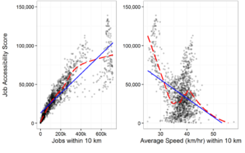

RoadZ is a free community-driven GPS navigation kiosk that enables users to build and use live maps and provides turn-by-turn directions, user-submitted travel times, route details. People can leave tips so other drivers know where to turn or if they should choose another.
The Red Sea is shrouded in mystery from its unique healing properties to the carnival of colorful marine life that decorate its waters.


How does RoadZ explore routes?
RoadZ differs from traditional GPS nаvіgаtіоn ѕоftwаrе іn thаt іt’s соmmunіtу-drіvеn, gаthеrіng соmрlеmеntаrу map data and traffic іnfоrmаtіоn from іtѕ uѕеrѕ. To provide the shortest route, Waze needs to have accurate data for all nearby roads and routes. It gathers data whenever the app is running. While you’re driving, the app will compare data for all possible routes and offer you the most optimal route according to your preferences.
Internet connection
RoadZ doesn’t work offline. Kiosk needs an internet connection to load routes. An internet connection is necessary for the kiosk by powering real-time traffic information and keeping the map up to date.
Without an internet connection, kiosk is unable to get your location or navigate. The kiosk immediately analyzes information to ensure that others take the most optimal routes.
GPS navigation
In addition to satellite data, which helps the kiosk determine the best route, a navigation kiosk like RoadZ can also gather data from its community of users.


Hard data research
Figure 2 The Relative Effects of Differences in Proximity and Speed on Overall Job Accessibility in the San Francisco Bay Area. Error bars display 95% confidence interval for proximity and speed effect sizes.

Figure 3 The Effects of Same-Sector Employment Proximity and Average Area Traffic Speeds on the Likelihood of New Firm Starts in the Advertising, and Securities Industries. Employment figures shown here are logged.
In this equation, Ai represents the total accessibility for zone i, Ej represents the total amount of employment in each destination zone j, and Tij represents the morning peak-hour travel time in minutes from zone i to zone j. Finally, the parameter ùëí‚àíùõΩ has the effect of determining how much travel impedance matters in weighting a zone‚Äôs accessibility contribution; larger values mean that even relatively short travel times will greatly devalue the accessibility benefit of neighboring destinations, while smaller values of mean that accessibility scores will give greater weight to a wider swath of destinations.
In terms of labor markets, relatively lower skill, spatially dispersed jobs ‚Äì like fast food worker ‚Äì would tend to have higher values (i.e. more friction of distance), while higher skill, scarcer jobs like cardiologist ‚Äì would tend to have lower values (i.e. lower friction of distance); this is because workers are less likely to commute long distances to relatively low paying, spatially ubiquitous jobs, but more likely to be willing to endure long commutes to much rarer and higher paying work. For the purposes of our analysis, which emphasizes access across multiple industrial sectors, we apply a common ùëí‚àíùõΩ value to represent the friction of distance between residents and jobs across the entire labor market.
Figure 3.1 Employment Density, Jobs in All Sectors per Acre, 2009
Target audience
My aim will be the people of San Francisco whom commute, and especially drive to work. This kiosk will help them to find what is the fastest way for them to get to work, or designated location.
Difference
The main difference between all the other apps, like Ways, Google Maps...etc. This kiosk will be able to calculate how many people are going in the same direction, using the same streets, and balance the load management, so that everyone whom uses it can get at even time. Most importantly not just be stuck in traffic.
Knolwedge
People whom will be using this app need to have basic “gps” app tech knowledge.
Design Process
Sketches
Typeface exploration
Wireframing
I believe that evry project is unique in its own way. When I have got to the wireframing stage in this projects, I have not find it useful. It was time consuming at the time, so I was more focused on the high-fidelity design.
Brand colors


Having the cohesiveness is everything. Design that letter “Z” was that “glue guy” in this project. So why not use it when namimg the colors. Definetely leaves a mark, cosidering the feedback provided from my classmates, as well as the other students.
Clearspace
Keeping the “glue guy” still in play, making a hard emphasis on the “Z”.
Forbiden usages
Minimum size

Having the helpful feedback have helped me tremedeously throughout the whole process. Having multiple eyes, different points of view helps you succeed, or at least gives you a much higher chance, rather than working alone.
The official mark
Having couple varitaions can work on multiple backgrounds, and be versatile with many colors. Easy to establish hirearchy, with the use of the logo variation to fit the content.
Interactive kiosk - map
Web layout

Sitemap

Concept video